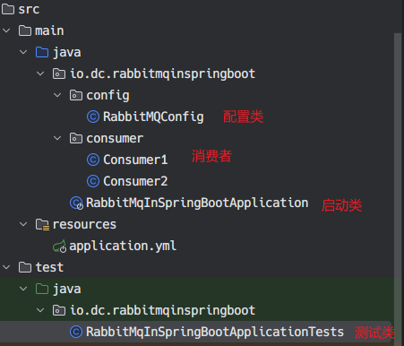
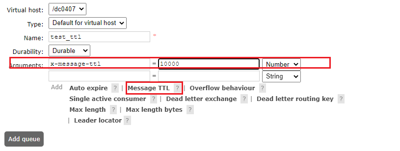
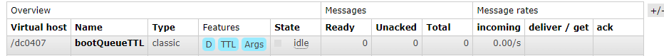
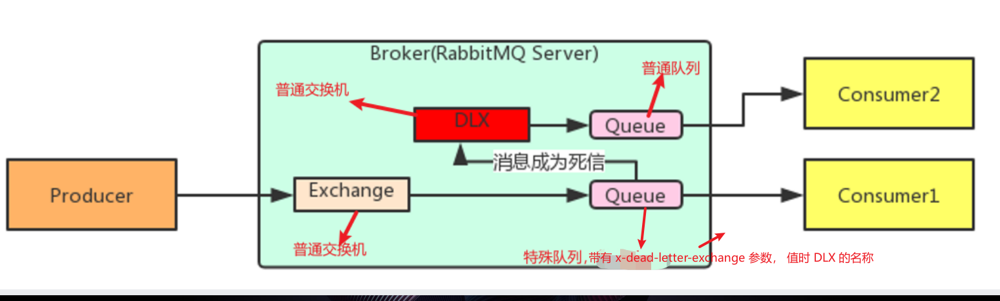

简单示例
项目结构

依赖
<dependencies>
<dependency>
<groupId>org.springframework.boot</groupId>
<artifactId>spring-boot-starter-amqp</artifactId>
</dependency>
<dependency>
<groupId>org.springframework.boot</groupId>
<artifactId>spring-boot-starter-test</artifactId>
</dependency>
<dependency>
<groupId>org.springframework.boot</groupId>
<artifactId>spring-boot-starter-test</artifactId>
</dependency>
<dependency>
<groupId>junit</groupId>
<artifactId>junit</artifactId>
<version>RELEASE</version>
<scope>compile</scope>
</dependency>
</dependencies>
配置
spring:
rabbitmq:
host: 127.0.0.1
port: 5672
username: dc
password: Aa111111
virtual-host: /dc0407
# 让发布者可以收到消息是否投递成功的回调
# 默认是 false
publisher-confirms: true
listener:
simple:
# 消费者开启手动确认模式，默认是 none
acknowledge-mode: manual
# 每次消费一个
prefetch: 1
package io.dc.rabbitmqinspringboot.config;
import org.springframework.amqp.core.*;
import org.springframework.amqp.rabbit.config.SimpleRabbitListenerContainerFactory;
import org.springframework.amqp.rabbit.connection.CachingConnectionFactory;
import org.springframework.amqp.rabbit.connection.ConnectionFactory;
import org.springframework.beans.factory.annotation.Qualifier;
import org.springframework.beans.factory.annotation.Value;
import org.springframework.context.annotation.Bean;
import org.springframework.context.annotation.Configuration;
@Configuration
public class RabbitMQConfig {
public static final String EXCHANGE_NAME = "boot_topic_exchange";
public static final String QUEUE_NAME = "boot_queue";
// 1. 声明交换机
@Bean("bootTopicExchange")
public Exchange bootExchange(){
return ExchangeBuilder.topicExchange(EXCHANGE_NAME).durable(false).build();
}
// 2. 声明队列
@Bean("bootQueue")
public Queue bootQueue(){
return QueueBuilder.durable(QUEUE_NAME).build();
}
// 3. 将队列与交换器进行绑定
@Bean
public Binding bindQueueExchange(@Qualifier("bootQueue") Queue queue, @Qualifier("bootTopicExchange") Exchange exchange){
return BindingBuilder.bind(queue).to(exchange).with("boot.#").noargs();
}
// 自定义连接工厂，自由程度高，本次演示没用到
@Bean("customConnectionFactory")
public ConnectionFactory connectionFactory(
@Value("${spring.rabbitmq.host}") String host,
@Value("${spring.rabbitmq.port}") int port,
@Value("${spring.rabbitmq.username}") String username,
@Value("${spring.rabbitmq.password}") String password,
@Value("${spring.rabbitmq.virtual-host}") String vhost
){
CachingConnectionFactory factory = new CachingConnectionFactory();
factory.setHost(host);
factory.setPort(port);
factory.setUsername(username);
factory.setPassword(password);
factory.setVirtualHost(vhost);
return factory;
}
// 自定义消息监听器工厂，自由程度高
@Bean(name = "customListenFactory")
public SimpleRabbitListenerContainerFactory listenerContainerFactory(@Qualifier("customConnectionFactory") ConnectionFactory connectionFactory){
SimpleRabbitListenerContainerFactory factory = new SimpleRabbitListenerContainerFactory();
factory.setConnectionFactory(connectionFactory);
// 设置手动签收
factory.setAcknowledgeMode(AcknowledgeMode.MANUAL);
// 设置预处理数量，同时没有确认的消息不能超过 N 个，起到消费者限流的作用，详细解释见下
factory.setPrefetchCount(5);
return factory;
}
}
生产者
在测试类中发消息
package io.dc.rabbitmqinspringboot;
import io.dc.rabbitmqinspringboot.config.RabbitMQConfig;
import org.junit.Test;
import org.junit.runner.RunWith;
import org.springframework.amqp.core.Message;
import org.springframework.amqp.rabbit.connection.CorrelationData;
import org.springframework.amqp.rabbit.core.RabbitTemplate;
import org.springframework.beans.factory.annotation.Autowired;
import org.springframework.boot.test.context.SpringBootTest;
import org.springframework.test.context.junit4.SpringJUnit4ClassRunner;
@SpringBootTest
@RunWith(SpringJUnit4ClassRunner.class)
public class RabbitMqInSpringBootApplicationTests {
@Autowired
RabbitTemplate rabbitTemplate;
// 发一次消息
@Test
public void sendMsg() {
rabbitTemplate.convertAndSend(RabbitMQConfig.EXCHANGE_NAME,"boot.dc","你好 rabbitMQ");
}
// 批量发消息
@Test
public void sendBatchMsg() {
for (int i = 0; i < 10; i++) {
rabbitTemplate.convertAndSend(RabbitMQConfig.EXCHANGE_NAME,"boot.dc","你好 rabbitMQ");
}
}
}
消费者
简单版，自动 ack
package io.dc.rabbitmqinspringboot.consumer;
import io.dc.rabbitmqinspringboot.config.RabbitMQConfig;
import org.springframework.amqp.rabbit.annotation.RabbitListener;
import org.springframework.stereotype.Component;
import org.springframework.amqp.core.Message;
@Component
public class Consumer1 {
@RabbitListener(queues = RabbitMQConfig.QUEUE_NAME)
public void listenerQueue(Message message){
System.out.println("消费者 1 接收到消息："+ message);
}
}
手动 ack:
需要在配置文件中额外设置为手动确认：manual
package io.dc.rabbitmqinspringboot.consumer;
import com.rabbitmq.client.Channel;
import io.dc.rabbitmqinspringboot.config.RabbitMQConfig;
import org.springframework.amqp.core.Message;
import org.springframework.amqp.rabbit.annotation.RabbitListener;
import org.springframework.amqp.rabbit.listener.api.ChannelAwareMessageListener;
import org.springframework.stereotype.Component;
@Component
public class Consumer2 {
// 也可以采用自定义监听工厂
// @RabbitListener(queues = RabbitMQConfig.QUEUE_NAME, containerFactory = "customListenFactory")
@RabbitListener(queues = RabbitMQConfig.QUEUE_NAME)
public void onMessage(Message message, Channel channel) throws Exception {
System.out.println("消费者 2 收到消息：" + new String(message.getBody()));
long deliveryTag = message.getMessageProperties().getDeliveryTag();
System.out.println("消息 Id: " + deliveryTag);
// 进行消息签收，如果不签收，将只会收到 ${listener.simple.prefetch} 个消息，因为设置了手动签收模式
channel.basicAck(deliveryTag, true);
// 拒绝签收
// 最后一个参数： 是否重回队列
// channel.basicNack(deliveryTag,false, false);
}
}
消息的可靠投递示例
在 RabbitMQ 的基本概念和五种模式使用示例 中已经介绍了两种实现可靠投递的机制，这里仅作为一个完整的补充：
confirm
@Test
public void testConfirm(){
rabbitTemplate.setConfirmCallback(new RabbitTemplate.ConfirmCallback() {
@Override
public void confirm(CorrelationData correlationData, boolean b, String s) {
System.out.println("执行了 confirm 方法。..");
if(b){
System.out.println("发送成功");
}else{
System.out.println("发送失败：" + s);
}
}
});
// 正常
rabbitTemplate.convertAndSend(RabbitMQConfig.EXCHANGE_NAME,"boot.dc","你好 rabbitMQ");
// 错误的交换器。会打印发送失败
rabbitTemplate.convertAndSend(RabbitMQConfig.EXCHANGE_NAME + "111","boot.dc","你好 rabbitMQ");
try {
Thread.sleep(5000);
} catch (InterruptedException e) {
throw new RuntimeException(e);
}
}
return
@Test
public void testReturn(){
// 只有设置 true，消息无法到达队列时，才会退回给生产者
rabbitTemplate.setMandatory(true);
rabbitTemplate.setReturnCallback(new RabbitTemplate.ReturnCallback() {
/**
*
* @param message the returned message.
* @param replyCode the reply code.
* @param replyText the reply text.
* @param exchange the exchange.
* @param routingKey the routing key.
*/
@Override
public void returnedMessage(Message message, int replyCode, String replyText, String exchange, String routingKey) {
System.out.println("消息退回了~");
System.out.println("message: " + message.toString());
System.out.println("replyCode: " + replyCode);
System.out.println("replyText: " + replyText);
System.out.println("exchange: " + exchange);
System.out.println("routingKey: " + routingKey);
}
});
// 正常
rabbitTemplate.convertAndSend(RabbitMQConfig.EXCHANGE_NAME,"boot.dc","你好 rabbitMQ");
// 错误的路由 key。消息会被退回
rabbitTemplate.convertAndSend(RabbitMQConfig.EXCHANGE_NAME,"1111_boot.dc","你好 rabbitMQ");
try {
Thread.sleep(5000);
} catch (InterruptedException e) {
throw new RuntimeException(e);
}
}
消费者确认机制
Ack 指的是 ack 指 Acknowledge，确认。 表示消费端收到消息后的确认方式。
有三种确认方式：
- 自动确认 acknowledge = none
- 手动确认 acknowledge = manual
- 根据异常情况确认 acknowledge = auto 这种情况使用麻烦，一般不用
其中自动确认是指，当消息一旦被 Consumer 接收到，则自动确认收到，并将相应 message 从 RabbitMQ 的消息缓存中移除。但是在实际业务处理中，很可能消息接收到，业务处理出现异常，那么该消息就会丢失。如果设置了手动确认方式，则需要在业务处理成功后，调用 channel.basicAck()，手动签收，如果出现异常，则调用 channel.basicNack() 方法，让其自动重新发送消息。
消费者调用 basicAck 或者 basicNack 签收或拒绝
消息可靠性总结：
- 持久化： exchange 要持久化，queue 要持久化， message 要持久化
- 生产者要 confirm
- 消费者要 ack
- Broker 要高可用
消费端限流
假设有一个场景：服务端挤压了大量的消息消息，此时启动消费者客户端，大量的消息会瞬间流入该客户端，可能会让客户端宕机。
当数据量特别大的时候，对生产者限制肯定是不科学的，这是用户的行为，我们应该对消费端限流。
RabbitMQ 提供了一种 qos（服务质量保证）功能，在非自动确认消息的前提下，如果一定数目的消息未被确认前，不消费新得消息
设置方法：
/**
* Request specific "quality of service" settings.
*
* These settings impose limits on the amount of data the server
* will deliver to consumers before requiring acknowledgements.
* Thus they provide a means of consumer-initiated flow control.
* @see com.rabbitmq.client.AMQP.Basic.Qos
* @param prefetchSize maximum amount of content (measured in
* octets) that the server will deliver, 0 if unlimited
* @param prefetchCount maximum number of messages that the server
* will deliver, 0 if unlimited
* @param global true if the settings should be applied to the
* entire channel rather than each consumer
* @throws java.io.IOException if an error is encountered
*/
void basicQos(int prefetchSize, int prefetchCount, boolean global) throws IOException;
- prefetchSize: 每条消息得大小。0： 不限制 注意： RabbitMQ 没有实现这个功能
- prefetchCount: 一次性消费消息得数量，会告诉 RabbitMQ 不要同时个同一个客户端推送对于 N 个消息，也就是一旦超过 N 个消息美欧被 ack，则该客户端就会阻塞，知道有消息 ack
- global: true / false 是否将上面得设置应用到 channel，简单得说上面得限制是 channel 级别还是某个消费者客户端级别。设置 false 的时候生效，因为 rabbitmq 没有实现 channel 级别的控制
在 sprinBoot 中，对客户端限流只需配置 prefetch 即可。和调用 basicQos(0, N, false) 效果一样
TTL
TTL 全称是 Time To Live （存活时间）, 当消息到达存活时间后还没有被消费就会自动清除，这与 redis 中的过期时间概念类似，我们应该合理应用 TTL，可以有效的处理过期的垃圾信息，从而降低服务器的负载。
RabbitMQ 既可以对单条消息设置存活时间，也可以对整个队列设置
单条消息
@Test
public void sendMsgWithTtl() {
MessageProperties properties1 = new MessageProperties();
properties1.setExpiration("6000");
Message message = new Message("你好".getBytes(),properties1);
rabbitTemplate.convertAndSend(RabbitMQConfig.EXCHANGE_NAME,"boot.dc",message);
}
整个队列设置 TTL
可以在后管设置：

也可以在代码中设置：
// 2. 声明队列
@Bean("bootQueueTTL")
public Queue bootQueue(){
Map<String, Object> arg = new HashMap<>();
arg.put("x-message-ttl",10000);
return QueueBuilder.durable("bootQueueTTL").withArguments(arg).build();
}
后管查看结果：

如果两者都设置了 TTL 以短的时间为准
死信队列
没有被及时消费的消息将被投放到一个特殊队列，被称为死信队列
没有被及时消费的原因:
- 消息被拒绝(basic.reject, basic.nack)， 并且不再重新投递，（requeue = false）
- 消息超时未被消费
- 队列长度达到最大
死信队列的实现步骤
声明队列Q的时候，在附加参数 x-dead-letter-exchange 指定交换器E的名称，只是声明，并非绑定。 它的含义是，当在队列Q上产生死信时，该消息会通过交换器 E 发走。
就这么简单，至于 E 会把消息发送发送到哪里，就看交换器E绑定了哪些队列。

代码示例:
// 带有死信的队列
public static final String QUEUE_NAME_WITH_DEAD = "boot_queue_with_dead";
// 死信消息从正常队列中移除，通过该交换机进入死信队列
// 和正常交换机没有差别，只不过被带有死信的队列指定了
public static final String deadExchange = "dead_exchange";
// 死信队列,接收死信交换机过来的消息
public static String deadQueue = "dead_queue";
// 声明死信交换器,和普通交换器一样
@Bean("bootDeadExchange")
public Exchange bootDeadExchange() {
return ExchangeBuilder.topicExchange(deadExchange).durable(false).build();
}
// 声明接收死信的队列
@Bean("bootDeadQueue")
public Queue bootDeadQueue(){
return QueueBuilder.durable(deadQueue).build();
}
// 把接收死信的队列与死信交换器绑定
@Bean
public Binding bindWithDeadQueueExchange(@Qualifier("bootDeadQueue") Queue queue, @Qualifier("bootDeadExchange") Exchange exchange){
return BindingBuilder.bind(queue).to(exchange).with("boot.#").noargs();
}
//********* 这才是死信队列的重要步骤 ***************
// 声明带有死信的队列
@Bean("bootWithDeadQueue")
public Queue bootWithDeadQueue(){
Map<String, Object> arg = new HashMap<>();
// 声明接收死信消息的交换器
// *****这一步很重要，可以让死信通过 deadExchange 发走****
arg.put("x-dead-letter-exchange",deadExchange);
return QueueBuilder.durable(QUEUE_NAME_WITH_DEAD).withArguments(arg).build();
}
// 将带有死信的队列绑定到交换机上
@Bean
public Binding bindDeadQueueExchange(@Qualifier("bootWithDeadQueue") Queue queue, @Qualifier("bootTopicExchange") Exchange exchange){
return BindingBuilder.bind(queue).to(exchange).with("boot.#").noargs();
}
// 发消息
@Test
public void sendDeadMsg() {
MessageProperties properties = new MessageProperties();
properties.setExpiration("6000");
Message message = new Message("你好,6秒后我将要从列中移除，并进入死信队列".getBytes(),properties);
rabbitTemplate.convertAndSend(RabbitMQConfig.EXCHANGE_NAME,"boot.hei",message);
}
效果如下：

六秒后:
延迟队列
RabbitMQ 没有自己实现延迟队列，但是我们可以借助TTL 和死信队列完成延迟队列的功能。
- 把需要延时处理的消息设置TTL,并发送到带有死信的队列中。
- 消费者监听死信队列
消息幂等设计
幂等设计是一种设计思想，一次或多次请求同一个资源，对资源本身应该有同样的结果，也就是说任意执行多次对资源本身产生的影响与执行一次的影响相同
在MQ中，消费多条相同的消息应该与只消费一次带来的效果相同
可以采用乐观锁的方式实现消息幂等：
以sql 更新语句为例：
-- version 某时刻等于 1
update account set price = price - 100, version = version + 1 where id = 1 and version = 1;
-- 把版本号作为更新语句的条件，同时版本号自增